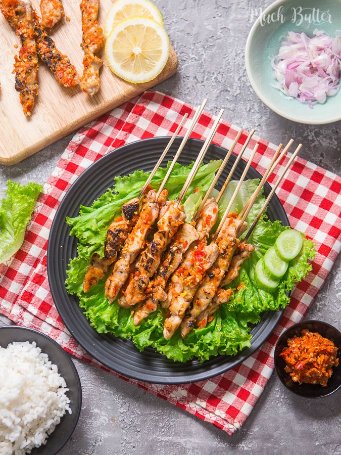

Sate Taichan Ndoro adalah UMKM kuliner yang berlokasi di Pekanbaru, Riau. Usaha ini dirintis dari gerobak kecil di pinggir jalan dengan modal terbatas, namun resep sambal racikan sendiri yang konsisten membuat pelanggan terus datang kembali.
Cukup ayam segar dibakar di atas arang, lalu disiram sambal rawit yang diulek langsung saat pesanan masuk — sederhana, tapi jujur soal rasa.
Menjadi UMKM kuliner sate taichan terpercaya di Pekanbaru yang dikenal karena konsistensi rasa, kebersihan, dan pelayanan ramah.
Pemilik usaha adalah warga asli Pekanbaru yang memulai usaha ini bermodal kecil namun konsisten menjaga kualitas bahan dan cita rasa sambal. Saat ini usaha dijalankan dengan dibantu 5-6 karyawan pada jam sibuk.